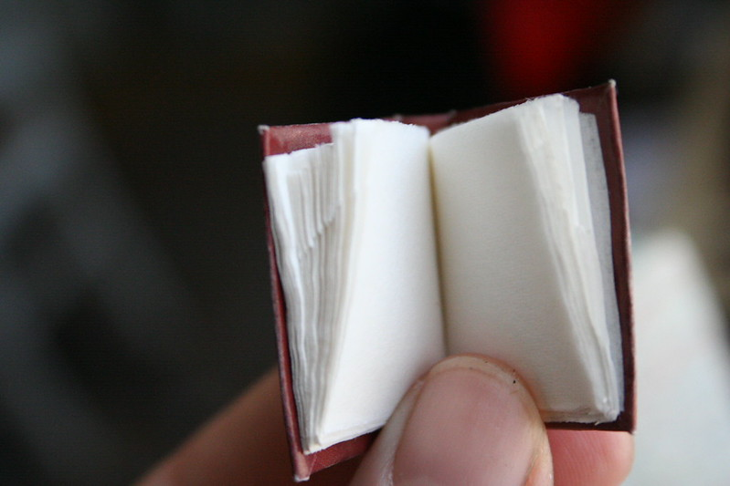
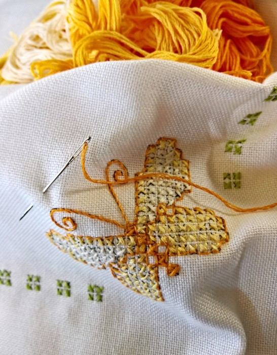

About me: My programming interests span a narrow range of subjects; I am mainly interested in how programming and code can influence the mind, AI's relation to addiction and brain activity, how coded programs can be used to divulge into research like never before, and using programming to make life more convenient in any way possible. Another one of programming interests has to do with how in certain research computer science and its programs can be connected to physical brain structures and perceptions. Furthermore, I am facinated by cognitive neuroscience and how programming relates to the brain, affecting the way people think and the synaptic structures (along with other neural aspects); I developed this interest before even reaching my teenage years, so I am entranced by the subject and will continue to pursue a career in this field and related fields. On the topic of that, this link: Your brain, your brain on code

